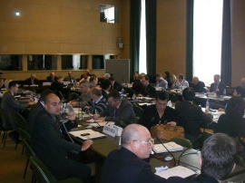

INSARAG is directed by a Steering Group, which consists of the INSARAG Chairman, INSARAG Regional Group Chairs and Vice-Chairs, the national focal points of INSARAG External Classification (IEC) classified countries, Chairs of any relevant INSARAG ad-hoc working groups and the INSARAG Secretariat. The Steering Group meets annually to determine the strategic direction and policies of INSARAG.

The reports of these annual meetings are published here.
2017:
2017 Chairman Summary (English)2017 Chairman Summary (Spanish)Annex A ISG 2017 AgendaAnnex B1 INSARAG List of participants Open SessionAnnex B2 ISGM Meeting List of participants Closed SessionAnnex C Strategy 2017-2020Annex D IER Guidance NoteAnnex E Beyond the Rubble2016:
2016 INSARAG Steering Group Meeting Chairman Summary with Annex A (English)
2016 INSARAG Steering Group Meeting Chairman Summary with Annex A (Spanish)
Annex B - Participant list
Annex C1 - Concept Note - Capacity Building
Annex C2 - Concept Note - IER System
Annex C3 - Concept Note - International Light Teams
Annex C4 - Concept Note - Beyond the Rubble
Annex C5 - Concept Note - National USAR Team Accreditation (English)
Annex C5 - Concept Note - National USAR Team Accreditation (Spanish)
2015:
2015 INSARAG Steering Group Meeting Chairman Summary (English)
1. Note Verbal from the Director OCHA Geneva
5. Annex C - Draft Abu Dhabi Declaration
2014:
2014 INSARAG Steering Group Meeting Chairman Summary with Annexes (English) 2014 INSARAG Steering Group Meeting Chairman Summary (Spanish)
2013:
2013 INSARAG Steering Group Meeting Chairman Summary (English , Spanish)
2013 INSARAG Steering Group Meeting Chairman Summary Annexes (English)
2012:
2012 INSARAG Steering Group Meeting Chairman Summary (English)
2011:
2011 INSARAG Steering Group Meeting Chairman Summary (Arabic, English, French)
2011 INSARAG Steering Group Meeting Chairman Summary Annexes (English)
2010:
2010 INSARAG Steering Group Meeting Chairman Summary with Annexes (English)
2009:
2009 INSARAG Steering Committee Meeting Chairman Summary with Annexes (English)
2008:
2008 INSARAG Steering Committee Meeting Chairman Summary with Annexes (English)
2007:
2007 INSARAG Steering Committee Meeting Participants List (English)
2007 INSARAG Steering Committee Meeting Chairman Summary (English)
2007 INSARAG Steering Committee Meeting Agenda (English)
2006:
2006 INSARAG Steering Committee Meeting Chairman Summary with Annex (English)
2005:
2005 INSARAG Steering Committee Meeting Chairman Summary (Arabic, English, French)
2005 INSARAG Steering Committee Meeting Agenda (English)
2004:
2004 INSARAG Steering Committee Meeting Chairman Summary (Arabic, English, French)
2004 INSARAG Steering Committee Meeting Participants List (English)
2003:
2003 INSARAG Steering Committee Meeting Participants List (English)
2003 INSARAG Steering Committee Meeting Chairman Summary (English)
2003 INSARAG Steering Committee Meeting Chairman Summary Annexes (English)
2002:
2002 INSARAG Steering Committee Meeting Report (English)
1999:
1999 INSARAG Steering Committee Meeting Report (English)
1998:
1998 INSARAG Steering Group Meeting Report (English)
1997:
1997 INSARAG Steering Group Meeting Report (English)
1994:
1994 INSARAG Steering Group Meeting Report (English)
1991:
1991 INSARAC Inaugural Meeting Documentation (English)